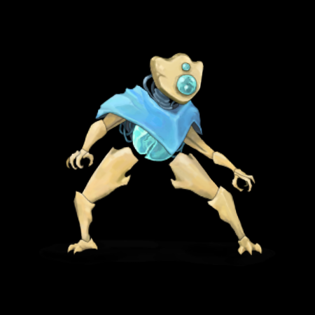
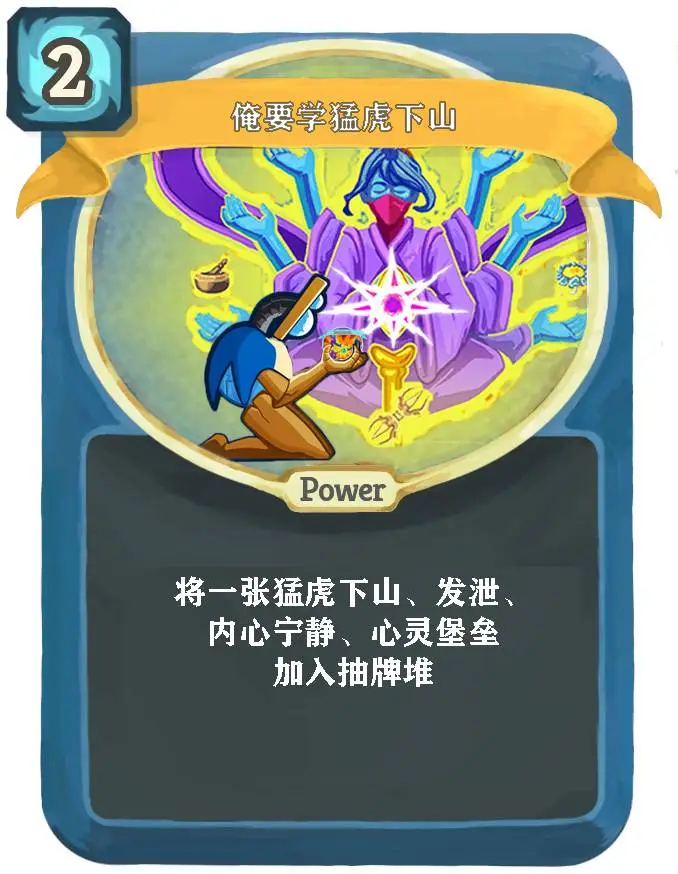

故障机器人是玩家在杀戮尖塔中可选的角色之一,于补丁22之后加入游戏。
比起其它两个职业，故障机器人拥有一个新的机制——充能球。 通过卡牌和遗物，故障机器人可以生成不同的充能球到充能球栏位中。在故障机器人的回合结束时，所有充能球按照从右到左的顺序触发它们的被动效果。充能球也可以在被消耗时产生爆发性的效果。关于充能球的详细机制，参见充能球。集中是故障机器人的专属属性，就像力量影响攻击造成的伤害、敏捷影响从卡牌获得的格挡那样，集中影响充能球产生的效果。
一老者弥留前，给三个儿子几十块钱，说谁能用这些钱买的东西把房子装满，谁就能继承遗产。大儿子买了一堆稻草，却只填了房子的一小半，二儿子买了一只蜡烛，烛光照亮了几乎每个角落，大家都以为二儿子要继承遗产了，三儿子摇摇头，购买了杀戮尖塔直播了一把机器人，果然笑声充满了整个房间。
鸡煲忽然喜爱上了收藏卡牌，一日叫朋友过来参观。 “这是快速检索,可以过4张牌。” “这是重编程，一费可以获得两点力量和敏捷。” 朋友点了点头“这收藏的卡牌都是极品，只有一样东西不太搭配。” 鸡煲问“是什么不搭？” 朋友“是你。”
鸡煲领域大神指导萌新， 萌新问:“为什么抓集中？”大神答:“集中是鸡煲最有用的属性，可以提高上限，还能用来减少战损。” 萌新又问“那为什么带超能光束？”大神答:“因为过渡能力非常强，可以多打小怪。” 萌新若有所思“抓了这么多强牌，什么时候开始爽？” 大神:“别急，我这把放弃对局，开一把观者给你爽。”
鸡煲走在路上被抢劫犯拦住，正在危急之时，心脏赶来救援，鸡煲十分感激“为什么你要帮助我呢？” 心脏答“你和他们三个出生不同，你从来不会真正伤害我。”
鸡煲和观者走在路上，鸡煲问“集中，你懂不懂？”观者说不懂。鸡煲说“那你就没有上限。” 鸡煲又问“冰球起防你懂不懂？”观者说不懂。鸡煲说“那你会吃战损。” 这时候对面来了三只咔咔， 观者问“速杀，你懂不懂？”鸡煲说不懂。 观者“那你完了。”

涅奥丢了他的手表，于是告诉观者和鸡煲，去高塔帮忙寻找。十分钟后，涅奥找到了手表，于是对战士说，告诉他们回来吧，我已经找到了。战士说，太晚了，他们当中一个杀穿了尖塔，怪物都承认他们拿了你的手表，而另一个已经死了。
男子第一天上班，发现公司供暖非常差，工位特别简陋，中午吃的饭也特别粗糙难吃，一怒之下找到领导，询问原因。 领导说，“我们知道你是玩鸡煲的，所以我们觉得你应该很能吃苦。”
制作组查看杀戮尖塔的评价。第一个说“这游戏太有趣了，组合又多又丰富。”制作组说“看来我们的战士设计的真好。” 第二个评论“这游戏太简单，随随便便就过了，而且套路单一。”制作组说“看来我们的观者做的不太平衡。” 第三个评论“这游戏就是一个笑话。” 制作组中的老总立刻站了起来“把故障机器人的设计师给我开除。”
编辑：发病大 责任编辑:乔加木der